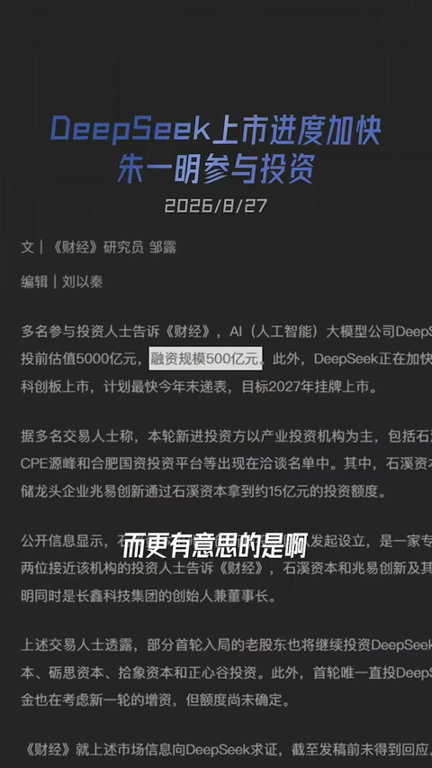
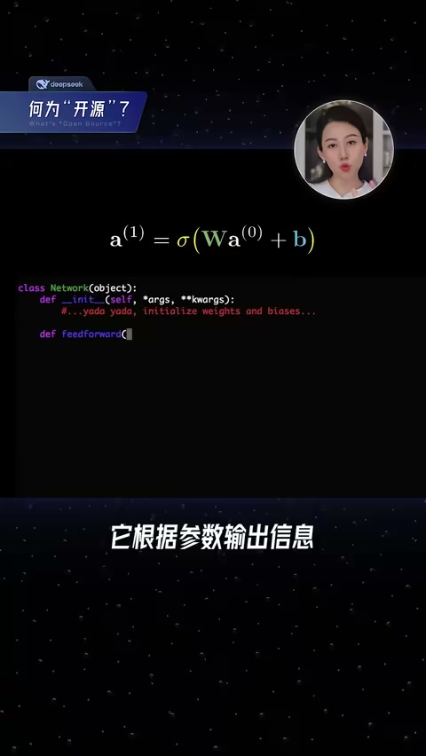
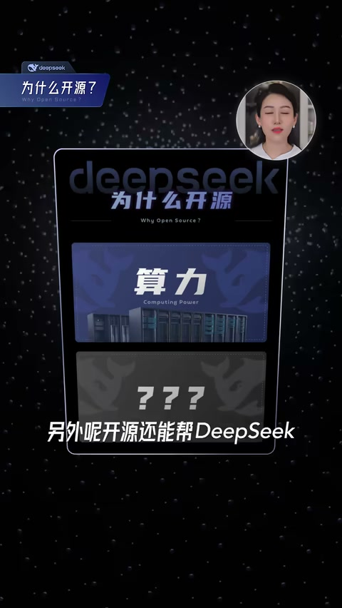
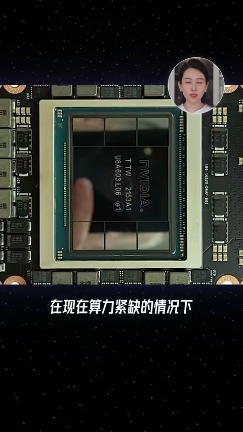

内容要点
DeepSeek 讨论度相对冷静时，却连做两轮约 500 亿量级融资；梁文锋自掏约 200 亿的「金主气质」加上据称四小时投资人闭门会录音外流（彭博亦报道其愤怒，作者据此倾向于内容可信）。视频论证：表面不缺钱，核心诉求是给人定价以稳住团队；战略上大幅做减法，用开源权重换社区运维与国产算力生态位，把卡留给训练、提高做成 AGI 的概率。
ASR 校正：「梁文芳/梁文峰」→梁文锋；「齐全」→期权；「B源」→闭源；「全重」→权重；「TileLong」→TileLang；人名/厂牌按通行写法。
知识结构
腾讯/宁德/京东等入场，梁本人重仓；号称不缺钱却融资。
核心作者被挖；无融资则期权无对价，对抗不了明码标价 offer。
不做一堆热闹方向；开源权重省推理与脏活，并服务国产卡生态。
两轮融资要读成「人才资产负债表」与「算力/生态结盟」，不是普通成长股扩表。
00:00-03:00不缺钱为何融：唯一核心利益是团队稳定
六月首轮约 500 亿结构：腾讯约 100 亿、宁德 50 亿、京东/网易/IDG 等，国家 AI 产业基金约 10 亿；最大金主叙事是梁文锋自掏约 200 亿。
原话口径：最大甚至唯一的核心利益是团队稳定。AI 表面抢芯片，实质抢人；DeepSeek 已流失多名核心作者。大厂给出数倍至八位数总包，而没融过资的期权难定价——融资是让兄弟算清手里值多少钱，并要求投资人不能挖人。

03:00-06:24战略减法与开源权重
闭门会据称大量「不做」：多模态、世界模型、C 端、金融医疗 agent 优先级更低——外界追问如何通向 AGI。梁的关键动作是开源，并质疑闭源好处。
作者解释：开源权重让社区帮做部署与脏活，等价省下推理卡与配套人力，自留算力训练；同时在国产卡语境下，用可改写栈（如 TileLang）占据生态供电者位置，提高拿到卡的概率。融资与开源都是广结善缘，目标仍是远处的 AGI 而非当下赚钱。



完整转录（278段）
以下文本由 Whisper 自动转录，可能存在识别误差；正文已按语境校正专有名词。
你有没有感觉Deepseek最近动静小多了
你看去年年初夺火
最近各种AI爆发
反倒它的讨论度低了
但偏偏就在这个时候
一向低调的Deepseek惊动了市场
之前一直号称不缺钱 不融资 不上市
今年6月份却完成了第一笔外部融资
上来就融了500亿
最近第二轮的500亿也接近尾声了
而更有意思的是
一向不怎么露面的梁文芳
最近被爆出来了一份跟投资人4个小时闭门会的竹子稿
内容是相当劲爆
本来呢 大家也不确定是真是假
但之后 美国的Bloomberg就爆料
说梁总对这个泄露非常生气
你看他这么生气
那这个录音 八成是真的
值得说道说道
咱们今天就结合着这个闭门会
来说说这个不走寻常路的Deepseek和梁文芳
到底想干嘛
这个AI的发展 中美竞争又会是个什么格局
咱先来快速看一下6月份的这笔融资
总共500亿
这里边腾讯100亿
宁德时代50亿
京东 网易 IDG各30亿
还有国家人工智能产业基金10亿
而这个轮里头领头的最大的金主是谁呢
梁文芳自己
一个人自掏腰包200亿
是吧 这个有钱真是霸气
不过 虽说腾讯 京东 宁德都进来了
但他们没有投票权
公司还是梁文芳控制
什么公司的发展战略 重大决策
Deepseek往哪走
还是我梁文芳说了算
不光你们没有投票权
投的钱还得锁定5年
这里唯一的例外
就是那个国家产业基金
它有投票权
所以从这个融资你就能看出来
Deepseek 虽然公众视野这个声量确实小
但在AI圈还是非常有话语权
那你看 它好像也没那么缺钱
还这么强势
那为什么要融资呢
核心就一个字
人
梁文芳原话是说
我们最大的核心利益
就是保持团队的稳定性
甚至可以认为是唯一的核心利益
你看看这个重要性
其实这个AI圈竞争
你看着大家是在抢芯片
抢内存 抢便利
但大玩家们最最核心的战场
其实是在抢人
这几年Deepseek确实被挖走太多人
第一代大语言模型的核心作者王炳轩
去了腾讯
那个天才少女罗福丽
去了小米
还有郭达雅
今年三月刚去了字节的戏
其实把Deepseek
他给的工资并不抵
但大厂们都在疯狂砸钱
有媒体就爆料说
都不是翻个两倍三倍
总报能有八位数
是不是在那数零呢
数清楚了吗
对于这些AI人才来说
虽然在Deepseek工作
他们也拿齐全
但Deepseek没融过资
他就没有对价
那我哪知道我这些齐全值多少钱
而对面都是大厂们
明码标价的offer
他怎么留人
所以这轮融资最重要的目的
就是这个
我融一轮资
让兄弟们看看
咱这公司多值钱
你算算你手里那齐全值多少钱
踏踏实实地干吧
据说梁文峰还明确给投资人提过要求
说不能挖Deepseek的人
也不能劝述他们出去创业
他自己也说了
这个风险就是人的风险
随着这轮融资
得到了比较大的消除
好 团队问住了
接下来咱们看看Deepseek
他到底要干嘛
梁总说的非常明确
就是AGI
通用人工智能
他在会上反反复复提到
可大家都想做AGI
关键是你怎么做
什么路线
我跟你说
你要是去看梁文峰的原话
八成得晕
因为他大部分时间说了一大堆
不做
多模态不做
世界模型不做
C端不重点做
D端顺便做
什么金融医疗这些agent
优先级更低
你这也不做
那也不做
你怎么通往AGI
他要做的
落到具体的动作上
最大的一个就是
开源
这点非常明确
他说看不到B源的好处
甚至还点名了
说自己的模型就是B源
他有什么好处
我看不到有什么好处
好 梁总听说开源
他到底开了个啥呢
其实这里头最主要的就是全重
什么意思呢
你可以简单把一个训练好的大模型
理解成训练好的大脑
它里边有几千亿个参数
这个参数也叫全重
你输入信息
它根据参数输出信息
就有点像Y等于AX加B
你输入X
它输出Y
这个A和B就叫全重
开源就是Deepseek
把训练好的大模型的这些全重
打包放在网上
谁都可以拿去改
部署
甚至拿去卖
也不用给Deepseek一分钱
当然了
你也可以直接接Deepseek的API
去用它部署号
总之就是开源之后谁都能用
那问题来了
这个开源对它做成AGI
有啥好处呢
Anthropic OpenAI都是B源
开源好在哪儿呢
其实这背后
因为中美环境的差异
Deepseek和他们的处境
是完全不一样的
梁文峰也说的很直白
说现在中美竞争
差距只有一个
就是
人才几乎没有差距
都是同一批人
国产的卡
性能上也OK
差不多四张华为的卡
约等于一张英伟达
但主要的限制
在于产能
你看华为
一年给互联网大厂的十几万张
Deepseek只有16000张
根本不够训练用
真的是有钱也买不到
他自己也说了
要是融的钱半年就能划光
那就太幸福了
所以这个卡
他肯定是想用在刀刃上
你要是B源
我得拿出来很多卡
去给消费者提供算力
而且像什么推理
框架
我都得自己招人自己干
还不如开源
开源的社区
可以一起帮忙来解决这些
脏活累活
再帮我给用户们提供服务
那不就相当于省了我的卡吗
而我自己呢
就可以
全力以赴奔赴AGI
把卡都用在训练上
另外呢
开源还能帮Deepseek
在AI圈占据一个有利的位置
帮他拿到更多资源
更多卡
这块不是梁总自己说的
是我分析的
你想
华为就那么多卡
他肯定是想卖给
对自己更有帮助的人
为什么AI圈
除了卡本身
很重要的就是
它CUDA那套编程工具
软件库
全世界都在上面写代码
很难换
而梁文峰呢
就在用一个叫做TileLong的语言
能把跑在CUDA上那套
在华为的卡上重新写一遍
这个对华为就很有吸引力了
尤其是你开源
就会有更多的人来用
更多的人
用这个TileLong的语言
用华为的卡
就可以让Deepseek
占到一个生态供电者的
有利位置上
有机会帮他拿到更多的卡
好
刚才我们说商业上
主要就是开源
那技术上呢
你看AI这块
从大语言模型
到推理
再到agent
它是一步一步的
梁文峰觉得
下一步就是
持续学习
就让AI有自己反思
自我进化的能力
这个现在全球都在摸索
而在达到持续学习之前
模型的迭代
主要就干三件事
成本更低
效果更好
速度更快
所以总的来说呢
在现在算力紧缺的情况下
必然对Deepseek
就算我赚到了钱
我也换不来更多的卡
那梁总手头也不差钱
他的目标还是很远的
不是为了当下赚钱
而是为了那个AGI
那我莫不如开源
不树敌
广洁善源
可以帮他分担一些脏活累活
也可以帮助他拿到更多的卡
包括融资
也是广洁善源
同时避免人才的流失
总之都是为了提高做成AGI的概率